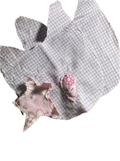
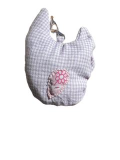
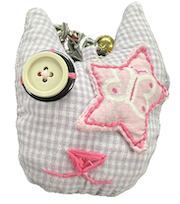
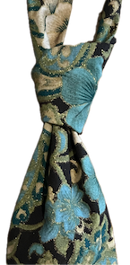
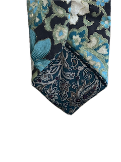
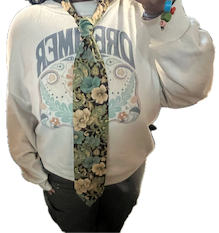
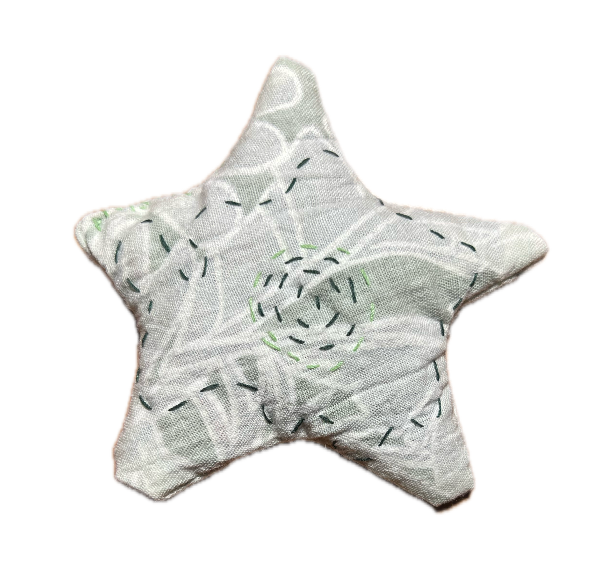
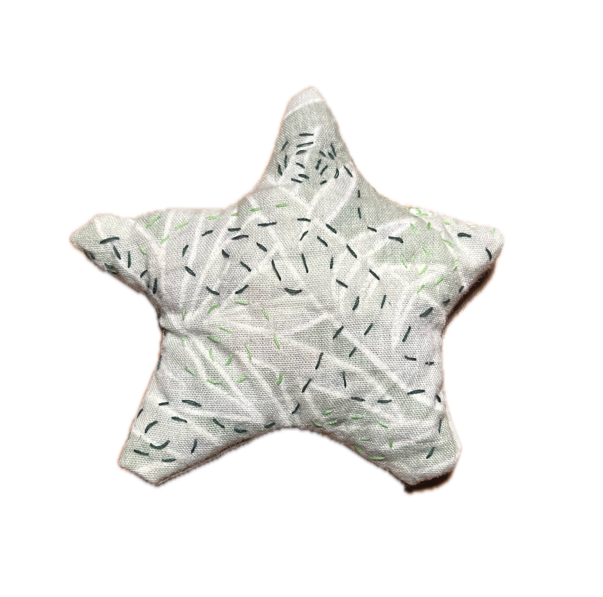

Page in progress
Interests
A small glimpse into my hobbies.



A birthday gift for a friend. My first complete stuffed creation as a gift. I need to practice closing stitch more. Stars are so hard. I will definitely be making more of these little guys. Super cute and doesn't take very long.



The moment I saw this fabric I knew I wanted to make a tie with it. Kind of went with the flow and didn't use a pattern, so the thickness throughout is a little odd and knotting it is finicky, but I still love it :)


My first stuffed creation.
Was bored and wanted to make
something. Decided on a
small-scale stuffed piece.
Did some stitching in a
state of creative drift.
You can never go
wrong with swirls.